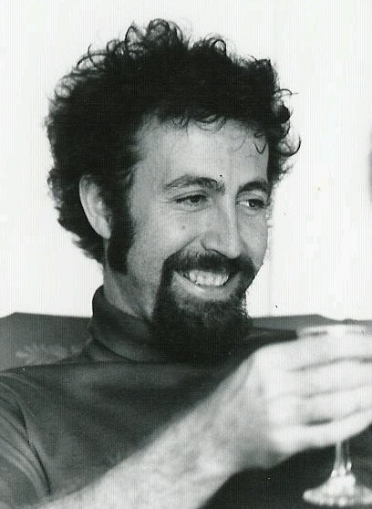

Rutgers Physics Links
About The Robert A. Schommer Observatory

The Rutgers Astronomical Observatory named after Robert A. Schommer. A Professor at Rutgers University who carried out some of the first CCD imaging studies of the Large Magellanic Cloud star clusters. His work was fundimental in our understanding of the chemical histories of star clusters in the Magellanic cloud and M33.
Observatory Status:
Closed
Collaborators

Collaborators